| Buku acuan | Thompson, Peteraf, Gamble & Strickland, Crafting & Executing Strategy: The Quest for Competitive Advantage (edisi ke-24, 2024), Bab 4 “Evaluating a Company’s Resources, Capabilities, and Competitiveness”. |
| Kasus | Robert M. Grant (2010), Case 6 “Manchester United: Preparing for Life without Ferguson”, berlatar Juli 2009, dari folder Studi Kasus (dua berkas PDF). |
| Standar dosen | RPKPS “@2026 AOL Course Outline SM MM_JKT SEMBA”, termasuk rubrik nilai, panduan analisis kasus (Appendix 3), struktur term paper, learning diary, dan presentasi lima slide. |
| Sesi terkait | Sesi 5: Ch. 04 + presentasi kasus Manchester United. Sesi 4: Ch. 03 (analisis eksternal sebagai pasangan bab ini). Sesi 6: Ch. 05 + Benchmarking (framework yang diperkenalkan di bab ini). |
Modul ini ditulis sebagai uraian naratif, bukan ringkasan. Setiap sub-bagian framework mengikuti urutan yang sama: pengertian dan kedudukannya dalam buku, uraian setiap dimensi beserta mekanismenya, cara seorang CEO menggunakannya, penerapan pada kasus dengan angka, dan kesalahan yang menurunkan nilai. Bacalah gambar asli buku terlebih dahulu pada setiap sub-bagian, lalu paragraf-paragraf yang menjelaskannya, karena paragraf tersebut merujuk langsung pada unsur-unsur gambar.
Bab 4 dibahas pada sesi kelima dengan sub-tujuan agar mahasiswa mampu mengevaluasi sumber daya, kapabilitas, dan daya saing perusahaan, dan pada sesi yang sama kelompok yang bertugas mempresentasikan kasus Manchester United (Almahendra, 2026). Pemasangan ini tepat karena Bab 4 adalah bab analisis internal, dan kasus Manchester United adalah kasus tentang aset internal yang paling sulit dinilai, yaitu sistem kepelatihan, pengembangan pemain, dan merek yang dibangun Sir Alex Ferguson selama dua puluh tiga tahun. Pertanyaan pembuka kasus, yaitu apa yang harus dilakukan klub menghadapi pensiunnya Ferguson, adalah pertanyaan Bab 4 dalam bentuk paling murni: aset mana yang melekat pada perusahaan dan aset mana yang melekat pada satu orang.
Bab 4 juga memenuhi tujuan mata kuliah pertama tentang penerapan framework untuk mendiagnosis isu strategis, dan secara khusus menyiapkan bagian diagnosis internal dalam term paper (Almahendra, 2026). Standar yang berlaku adalah bahwa diagnosis internal tidak boleh berhenti pada daftar kekuatan dan kelemahan, melainkan harus menguji aset dengan empat tes VRIN, membandingkan biaya aktivitas dengan pesaing melalui rantai nilai dan benchmarking, dan menghasilkan penilaian kekuatan kompetitif yang terbobot. Untuk Bab 4, nilai A menuntut mahasiswa berani menyatakan aset mana yang tidak lolos VRIN, karena pernyataan bahwa semua kekuatan perusahaan adalah keunggulan berkelanjutan adalah tanda analisis yang dangkal.
Prinsip keempat cara berpikir dosen, bukti kuantitatif, paling menentukan pada bab ini, karena Bab 4 memberi tiga alat yang secara eksplisit menuntut angka: rasio keuangan Table 4.1, perbandingan biaya aktivitas melalui benchmarking, dan penilaian kekuatan kompetitif terbobot Table 4.4. Prinsip kelima tentang perspektif yang bertentangan tampak pada tuntutan VRIN untuk menguji apakah aset yang dibanggakan perusahaan benar-benar langka dan sulit ditiru. Prinsip ketujuh tentang menjembatani framework tampak pada kedudukan Bab 4 sebagai penutup analisis situasi: Bab 3 menjawab apakah industrinya menarik, Bab 4 menjawab apakah perusahaannya mampu, dan Bab 5 menjawab strategi mana yang cocok dengan jawaban keduanya.
Pemasangan dengan kasus Manchester United memberi petunjuk dengan tingkat keyakinan [Kemungkinan Besar]. Dosen tampaknya ingin mahasiswa memahami perbedaan antara sumber daya dan kapabilitas dalam industri di mana sumber daya utama, yaitu pemain, dapat dibeli dengan uang oleh siapa pun. Dalam industri semacam itu, keunggulan yang bertahan tidak mungkin berasal dari sumber daya yang dapat dibeli, melainkan dari kapabilitas mengubah sumber daya itu menjadi kinerja, dan kapabilitas inilah yang harus diuji kelekatannya pada organisasi ketika orang yang membangunnya pergi.
Kasus ini ditulis Robert M. Grant pada 2010 dan berlatar Juli 2009, ketika Chief Executive David Gill menyertai tur Asia klub dan memikirkan kemungkinan pensiunnya Ferguson pada akhir musim 2009 sampai 2010 pada usia 68 tahun. Pada saat itu Manchester United adalah klub dengan poin kinerja tertinggi di Eropa untuk periode 2000 sampai 2009, juara Liga Primer tiga musim berturut-turut, dan juara Eropa 2008. Secara finansial, klub membukukan pendapatan 324,8 juta euro dengan laba operasi sebelum penyusutan 101,9 juta euro, tertinggi di antara klub-klub Eropa, dan pengembalian atas penjualan 12,6 persen untuk 2000 sampai 2006, pada industri yang sebagian besar pemainnya merugi (Grant, 2010). Basis penggemarnya diperkirakan 80 juta orang di Asia saja, dan kontrak sponsor AON senilai 80 juta poundsterling untuk empat tahun dibangun di atas basis itu.
Di balik kinerja itu ada dua ketegangan. Pertama, akuisisi keluarga Glazer pada 2005 dibiayai terutama dengan utang, sehingga klub tercatat memiliki utang 616 juta poundsterling, dan dewan klub terdiri atas enam anak Glazer. Kedua, seluruh sistem olahraga klub, mulai dari jaringan pencari bakat yang diperluas dari lima menjadi lebih dari dua puluh orang, akademi pemain muda, rotasi skuad, sampai disiplin bahwa tidak ada pemain yang lebih besar dari klub, dibangun oleh dan berpusat pada Ferguson. Kandidat pengganti terbagi antara orang dalam seperti Carlos Queiroz, Mike Phelan, Ole Gunnar Solskjær, dan Brian McClair yang akan mempertahankan sistem tetapi diragukan wibawanya di hadapan bintang, dan orang luar seperti Jose Mourinho yang berwibawa tetapi kemungkinan akan merombak sistem itu. Kasus berakhir tanpa keputusan, dan keputusan itulah yang harus diambil mahasiswa dengan alat-alat Bab 4.
Bab 4 berjudul Evaluating a Company's Resources, Capabilities, and Competitiveness dan disusun sebagai enam pertanyaan berurutan (Thompson et al., 2024, hlm. 88 sampai 89). Pertanyaan pertama, seberapa baik strategi saat ini bekerja. Pertanyaan kedua, apa kekuatan dan kelemahan perusahaan dalam kaitannya dengan peluang dan ancaman. Pertanyaan ketiga, apa sumber daya dan kapabilitas terpenting perusahaan dan apakah keduanya memberi keunggulan yang bertahan. Pertanyaan keempat, bagaimana aktivitas rantai nilai memengaruhi struktur biaya dan proposisi nilai pelanggan. Pertanyaan kelima, apakah perusahaan lebih kuat atau lebih lemah dari pesaing utama. Pertanyaan keenam, isu strategis apa yang layak mendapat perhatian mendesak manajemen. Lima tujuan pembelajaran bab mengikuti urutan itu, dan urutan tersebut sengaja dibuat mengerucut: dari kinerja, ke situasi, ke aset, ke aktivitas, ke perbandingan, dan akhirnya ke agenda.
Framework yang harus dikuasai dari bab ini ada tiga belas: komponen strategi bisnis tunggal (Figure 4.1), indikator kinerja dan rasio keuangan (Table 4.1), analisis SWOT dengan konsep kompetensi (Table 4.2 dan Figure 4.2), jenis sumber daya (Table 4.3) dan dua cara mengenali kapabilitas, ikatan sumber daya, empat tes VRIN, kapabilitas dinamis, rantai nilai perusahaan (Figure 4.3 dan Capsule 4.1) dengan penetapan biaya berbasis aktivitas, sistem rantai nilai (Figure 4.4), benchmarking dan praktik terbaik (Capsule 4.2 dan 4.3), pilihan strategis memperbaiki kerugian biaya atau nilai, penerjemahan aktivitas menjadi keunggulan kompetitif, penilaian kekuatan kompetitif terbobot lima langkah (Table 4.4), dan daftar prioritas isu strategis.
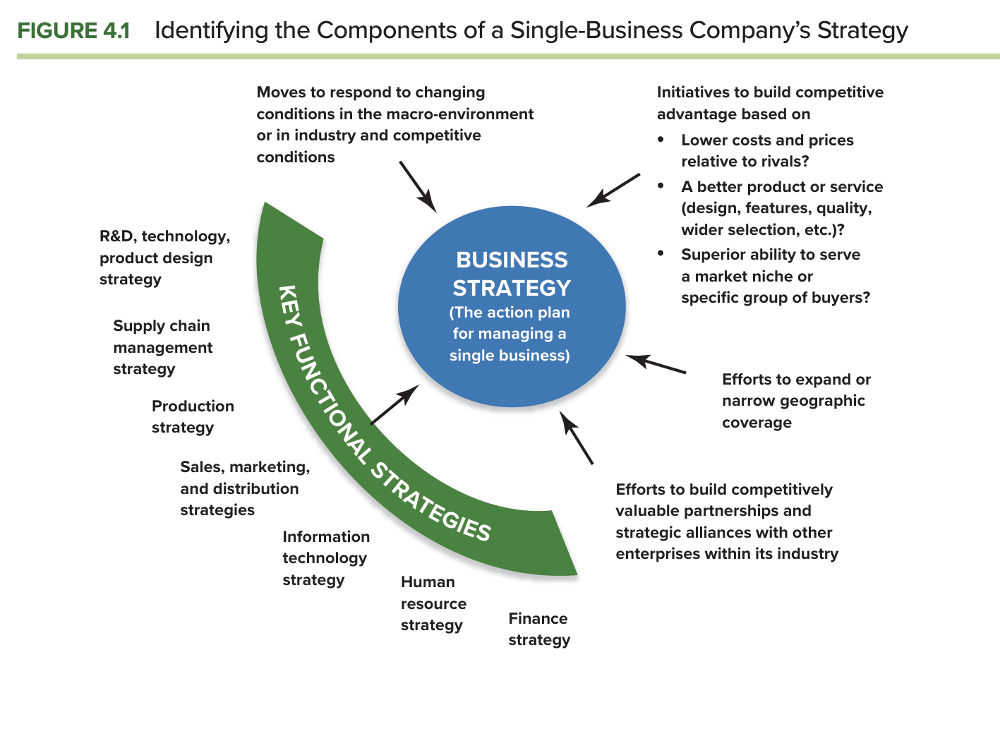
Mengevaluasi strategi harus dimulai dengan mengetahui strategi apa yang sedang dijalankan, dan Figure 4.1 memberi kerangkanya. Di pusat gambar ada strategi bisnis sebagai rencana tindakan untuk mengelola satu bisnis, yang ditopang oleh strategi fungsional utama, yaitu riset dan desain produk, rantai pasok, produksi, penjualan dan distribusi, teknologi informasi, sumber daya manusia, dan keuangan. Di sekelilingnya ada empat kelompok tindakan: langkah menanggapi perubahan lingkungan makro dan industri, inisiatif membangun keunggulan kompetitif berdasarkan biaya lebih rendah, produk lebih baik, atau kemampuan melayani ceruk, upaya memperluas atau mempersempit cakupan geografis, dan upaya membangun kemitraan strategis (Thompson et al., 2024, hlm. 90). Cara memakainya adalah mengisi setiap kotak dengan tindakan nyata perusahaan, lalu memeriksa apakah tindakan-tindakan itu saling mendukung; pada Manchester United, misalnya, tindakan mengembangkan pemain muda pada kotak sumber daya manusia harus konsisten dengan tindakan menjual pemain mahal pada kotak keuangan.
Setelah strategi dikenali, kinerjanya dinilai dengan indikator yang disebut buku: tren pertumbuhan penjualan dan laba, tren harga saham, kekuatan keuangan keseluruhan, tingkat retensi pelanggan, laju perolehan pelanggan baru, dan bukti perbaikan proses internal seperti tingkat cacat dan produktivitas karyawan (Thompson et al., 2024, hlm. 91). Buku menegaskan bahwa kinerja keuangan yang lesu dan pencapaian pasar yang kelas dua hampir selalu menandakan strategi yang lemah, eksekusi yang lemah, atau keduanya. Mekanismenya sederhana tetapi sering diabaikan: semakin kuat kinerja saat ini, semakin kecil kemungkinan strategi perlu diubah secara radikal, sehingga evaluasi kinerja adalah penyaring pertama sebelum menghabiskan energi pada perubahan strategi yang tidak perlu.
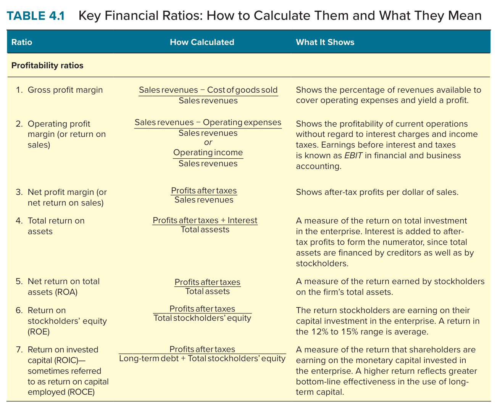
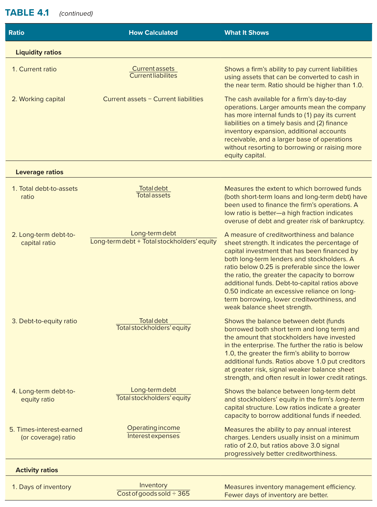
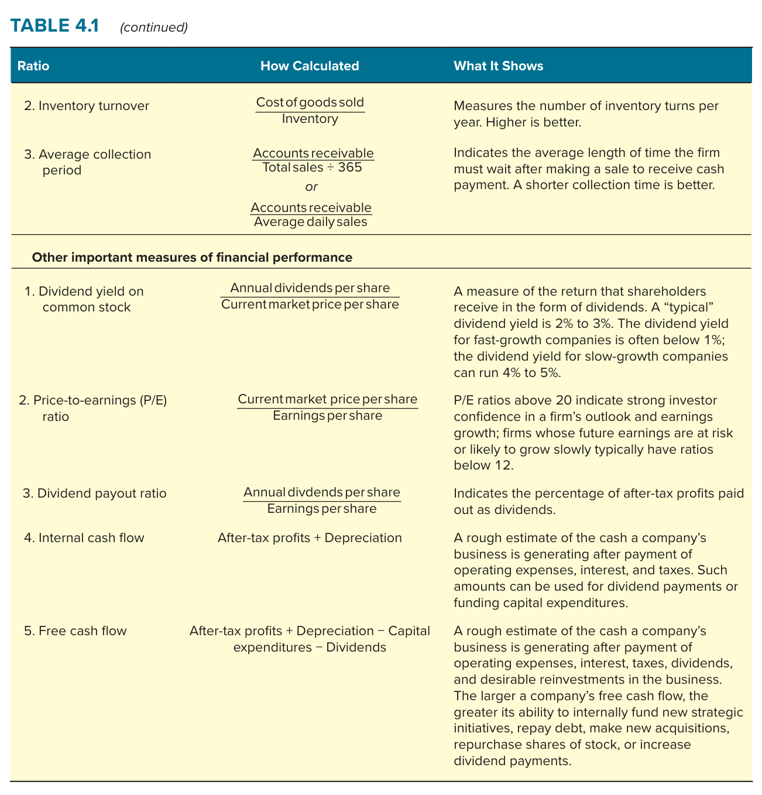
Table 4.1 memuat rasio dalam lima kelompok. Rasio profitabilitas mencakup margin laba kotor, margin laba operasi, margin laba bersih, pengembalian atas aset, pengembalian atas ekuitas yang rata-ratanya 12 sampai 15 persen, dan pengembalian atas modal yang diinvestasikan. Rasio likuiditas mencakup rasio lancar dan modal kerja. Rasio leverage mencakup utang terhadap aset, utang jangka panjang terhadap modal, utang terhadap ekuitas, dan kelipatan bunga yang dapat ditutup laba. Rasio aktivitas mencakup hari persediaan, perputaran persediaan, dan periode penagihan. Ukuran lain mencakup imbal hasil dividen, rasio harga terhadap laba, rasio pembayaran dividen, arus kas internal, dan arus kas bebas (Thompson et al., 2024, hlm. 91 sampai 93). Bagi CEO, kegunaan tabel ini bukan menghitung semua rasio, melainkan memilih tiga atau empat yang paling menjelaskan model bisnis perusahaan, karena pada klub sepak bola rasio persediaan tidak bermakna sedangkan rasio upah terhadap pendapatan, yang tidak ada dalam tabel, adalah rasio yang paling menentukan.
SWOT, singkatan dari kekuatan dan kelemahan internal serta peluang dan ancaman eksternal, adalah alat diagnosis yang paling populer karena mudah dipakai dan dapat digunakan baik untuk mengevaluasi strategi yang ada maupun untuk merancang strategi baru yang memanfaatkan kekuatan, mengatasi kelemahan, membidik peluang terbaik, dan bertahan dari ancaman (Thompson et al., 2024, hlm. 94). Sebelum masuk ke daftar, buku memberi tangga konsep yang penting. Kompetensi adalah aktivitas yang telah dipelajari perusahaan sehingga dapat dilakukan dengan mahir dan pada biaya yang dapat diterima. Kompetensi khas adalah kompetensi yang tingkatnya lebih unggul dari pesaing. Kompetensi inti adalah aktivitas internal yang dilakukan dengan mahir dan menjadi pusat strategi perusahaan, biasanya sekaligus khas (Thompson et al., 2024, hlm. 94 sampai 95). Tangga ini penting karena menyebut sesuatu sebagai kekuatan belum mengatakan apa-apa sampai tingkatnya pada tangga itu ditentukan.
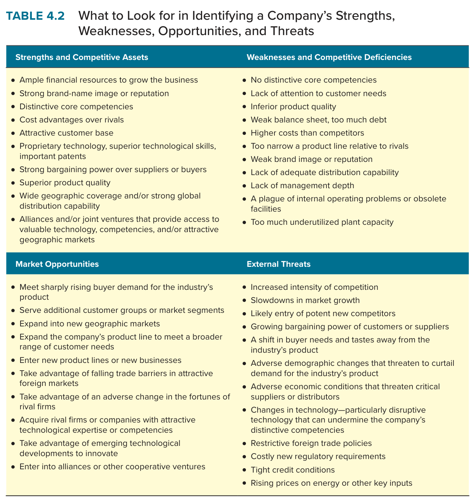
Table 4.2 memberi daftar pemeriksaan untuk keempat komponen. Kekuatan mencakup sumber daya keuangan yang cukup, merek yang kuat, kompetensi inti, keunggulan biaya, teknologi unggul, kapabilitas bersaing yang lebih baik dari pesaing, dan cakupan geografis yang luas. Kelemahan mencakup ketiadaan arah strategis, aset yang lebih rendah dari pesaing, utang yang terlalu tinggi, keterampilan yang lemah, kapabilitas distribusi yang kurang, dan produk yang kurang dimanfaatkan. Peluang mencakup permintaan yang tumbuh, segmen baru, geografi baru, akuisisi pesaing yang lemah, dan teknologi baru. Ancaman mencakup persaingan yang meningkat, pesaing baru, produk pengganti, kekuatan tawar pembeli dan pemasok, regulasi, dan kondisi ekonomi (Thompson et al., 2024, hlm. 96). Buku menegaskan bahwa peluang yang relevan hanyalah yang cocok dengan sumber daya perusahaan, bukan setiap peluang di industri.
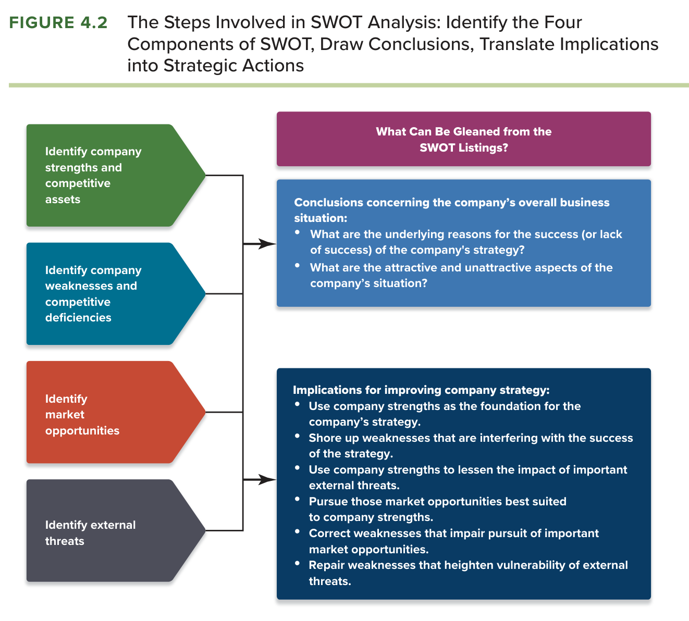
Figure 4.2 adalah bagian SWOT yang paling sering dilupakan mahasiswa. Gambar itu menunjukkan bahwa empat daftar hanyalah langkah pertama; langkah kedua adalah menarik simpulan tentang situasi keseluruhan perusahaan, yaitu alasan di balik keberhasilan atau kegagalan strategi dan aspek mana dari situasi yang paling menarik dan paling mengkhawatirkan; langkah ketiga adalah menerjemahkan simpulan itu menjadi tindakan, yaitu memakai kekuatan sebagai landasan, memperbaiki kelemahan yang mengganggu, mengejar peluang yang paling cocok, dan bertahan dari ancaman (Thompson et al., 2024, hlm. 97). Dalam kelas Dr. Rangga, SWOT yang berhenti pada empat daftar dinilai sebagai deskripsi, dan SWOT yang sampai pada tindakan dinilai sebagai analisis; perbedaannya sering kali adalah satu paragraf simpulan yang menyatakan apakah kekuatan cukup besar untuk menutupi kelemahan.
Sumber daya adalah aset kompetitif yang dimiliki atau dikendalikan perusahaan, sedangkan kapabilitas adalah kapasitas perusahaan melakukan suatu aktivitas internal dengan kompeten, dan kapabilitas dikembangkan melalui penggunaan sumber daya (Thompson et al., 2024, hlm. 98). Keduanya adalah penentu daya saing, dan analisis sumber daya dan kapabilitas adalah alat untuk menakar apakah aset itu dapat menopang keunggulan yang bertahan. Pembedaan ini penting karena sumber daya adalah benda atau orang yang dapat dimiliki, sedangkan kapabilitas adalah kemampuan organisasi yang hanya tampak ketika digunakan; klub sepak bola memiliki pemain sebagai sumber daya, tetapi kemampuan memadukan pemain menjadi tim adalah kapabilitas.
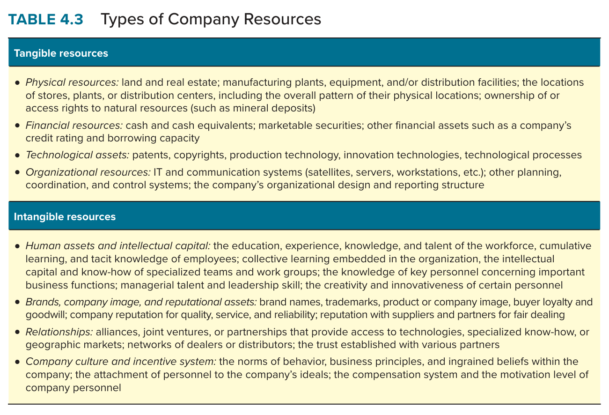
Table 4.3 membagi sumber daya menjadi berwujud dan tak berwujud. Sumber daya berwujud mencakup fisik seperti pabrik dan lokasi, keuangan seperti kas dan peringkat kredit, teknologi seperti paten dan hak cipta, dan organisasi seperti sistem informasi dan pengendalian. Sumber daya tak berwujud mencakup aset manusia dan modal intelektual seperti pengalaman dan pengetahuan karyawan, merek dan reputasi, hubungan dengan pemasok dan pelanggan, serta budaya dan sistem insentif perusahaan (Thompson et al., 2024, hlm. 99 sampai 100). Buku sengaja memasukkan sumber daya manusia ke kategori tak berwujud untuk menekankan bahwa nilainya terletak pada keterampilan dan pengetahuan, bukan pada jumlah orang. Untuk mengenali kapabilitas, buku memberi dua cara: mulai dari sumber daya lalu mencari kapabilitas yang berhubungan, atau menyurvei setiap fungsi perusahaan lalu mencari kapabilitas di dalamnya.
Kelemahan cara kedua adalah bahwa kapabilitas terpenting sering bersifat lintas fungsi, dan buku menyebut kapabilitas lintas fungsi yang kompleks dan melibatkan banyak aset yang saling terkait sebagai ikatan sumber daya. Ikatan sumber daya penting untuk tidak dilewatkan karena ia dapat lolos empat tes daya kompetitif meskipun komponen-komponennya sendiri tidak lolos, seperti ikatan Nike antara keahlian desain, riset pasar, dukungan atlet, merek, dan keahlian manajerial yang membuatnya nomor satu lebih dari dua puluh tahun (Thompson et al., 2024, hlm. 101). Konsep inilah yang paling menentukan pada kasus Manchester United, karena jaringan pencari bakat, akademi, disiplin latihan, rotasi skuad, dan filosofi permainan masing-masing dapat ditiru, tetapi ikatannya sebagai satu sistem tidak mudah ditiru.
Daya kompetitif sebuah sumber daya atau kapabilitas diukur dari berapa banyak dari empat tes yang dapat dilaluinya. Tes pertama, apakah ia bernilai, yaitu relevan langsung dengan strategi dan membuat perusahaan menjadi pesaing yang lebih efektif, dengan indikator apakah ia memperkuat proposisi nilai pelanggan atau formula laba; Google gagal mengubah kapabilitas teknologinya menjadi keberhasilan Google Wallet yang merugi lebih dari 300 juta dolar. Tes kedua, apakah ia langka, yaitu dimiliki hanya sebagian kecil perusahaan di industri; kapabilitas pemasaran semua produsen sereal bernilai tetapi tidak langka, sedangkan kekuatan merek Oreo langka. Tes ketiga, apakah ia sulit ditiru, yang terpenuhi ketika aset itu unik, harus dibangun lama, memerlukan pengeluaran besar, atau memiliki kompleksitas sosial dan ambiguitas kausal; Tom's Shoes kehilangan keunggulannya ketika desain dan praktik amalnya ditiru. Tes keempat, apakah ia tidak tergantikan, yaitu kebal dari ancaman substitusi oleh jenis sumber daya lain; keunggulan biaya dari otomasi dapat dinetralkan oleh pesaing yang memakai tenaga kerja murah di luar negeri (Thompson et al., 2024, hlm. 101 sampai 102).
Dua tes pertama menentukan apakah aset dapat menopang keunggulan kompetitif, dan dua tes terakhir menentukan apakah keunggulan itu dapat dipertahankan. Buku menegaskan bahwa sebagian besar perusahaan tidak memiliki aset yang lolos keempat tes dengan nilai tinggi; kebanyakan memiliki campuran satu atau dua aset yang sangat bernilai, beberapa yang baik, dan banyak yang biasa (Thompson et al., 2024, hlm. 102 sampai 103). Aset yang hanya bernilai memberi kesetaraan kompetitif, aset yang bernilai dan langka adalah aset strategis sejati yang memberi keunggulan sekurang-kurangnya jangka pendek, dan aset yang lolos keempat tes memberi keunggulan berkelanjutan dengan potensi laba yang jauh lebih besar, seperti Costco dan Lincoln Electric. Dua konsep yang menghambat peniruan perlu dicatat: kompleksitas sosial, yaitu aset yang lahir dari budaya dan hubungan antar orang, dan ambiguitas kausal, yaitu ketidakjelasan bagaimana aset yang kompleks menghasilkan keunggulan sehingga pesaing tidak tahu persis apa yang harus ditiru.
Bagi CEO, VRIN adalah alat untuk menolak klaim kekuatan yang berlebihan. Ketika manajer menyatakan bahwa tim yang hebat adalah keunggulan perusahaan, VRIN menanyakan apakah tim itu langka, apakah pesaing dapat membajaknya, dan apakah teknologi dapat menggantikannya. Ketika manajer menyatakan bahwa merek adalah keunggulan, VRIN menanyakan apakah merek itu dibangun bertahun-tahun sehingga sulit ditiru, atau hanya hasil belanja iklan yang dapat disamai siapa pun. Kejujuran pada tahap ini menentukan mutu seluruh strategi, karena strategi yang dibangun di atas aset yang tidak lolos VRIN akan runtuh ketika pesaing menyamainya.
Bahkan perusahaan seperti Costco tidak dapat berpuas diri, karena pesaing yang semula tidak mampu meniru dapat mengembangkan pengganti yang semakin baik, dan sumber daya dapat terdepresiasi seperti aset lain apabila diabaikan; perubahan disruptif dapat mengubah aset strategis dari berlian menjadi karat (Thompson et al., 2024, hlm. 103). Tantangan manajemen memiliki dua unsur: memodifikasi aset yang ada secara berkelanjutan dan mengawasi peluang untuk mengembangkan kapabilitas yang sama sekali baru. Ketika kemampuan menyegarkan dan memperbarui aset kompetitif itu sendiri menjadi rutin dan dilakukan dengan konsisten, ia menjadi kapabilitas dinamis, yaitu kapasitas berkelanjutan perusahaan untuk memodifikasi sumber daya dan kapabilitas yang ada atau menciptakan yang baru (Thompson et al., 2024, hlm. 103 sampai 104).
Buku memberi dua jalur kapabilitas dinamis. Jalur pertama adalah perbaikan bertahap aset yang ada, seperti Toyota yang terus menyempurnakan sistem produksinya dan BMW yang mengembangkan kapabilitas mesin hibrida menjadi mobil listrik. Jalur kedua adalah menambah aset baru melalui aliansi dan akuisisi, seperti kemitraan General Motors dengan LG untuk platform mobil listrik dan strategi akuisisi untaian mutiara Bristol-Myers Squibb untuk mengganti paten yang kedaluwarsa. Bagi CEO, konsep ini mengubah pertanyaan dari apa aset kita menjadi apakah kita memiliki mesin yang memperbarui aset kita, dan pada klub sepak bola, mesin itu adalah kemampuan membangun ulang skuad setiap beberapa tahun tanpa kehilangan prestasi, yang Ferguson lakukan pada 1993, 1999, dan 2008.
Setiap bisnis terdiri atas kumpulan aktivitas untuk memproduksi, memasarkan, mengirim, dan mendukung produknya, dan seluruh aktivitas internal itu membentuk rantai nilai, karena maksud akhirnya adalah menciptakan nilai bagi pembeli (Thompson et al., 2024, hlm. 105). Dua pernyataan buku menjadi alasan pentingnya alat ini: semakin besar nilai pelanggan yang dapat ditawarkan perusahaan secara menguntungkan dibanding pesaing, semakin kecil kerentanannya, dan semakin tinggi biayanya di atas pesaing, semakin besar kerentanannya (Thompson et al., 2024, hlm. 104). Rantai nilai adalah alat untuk memeriksa keduanya sekaligus, karena ia memperlihatkan aktivitas mana yang menciptakan nilai dan aktivitas mana yang menimbulkan biaya.
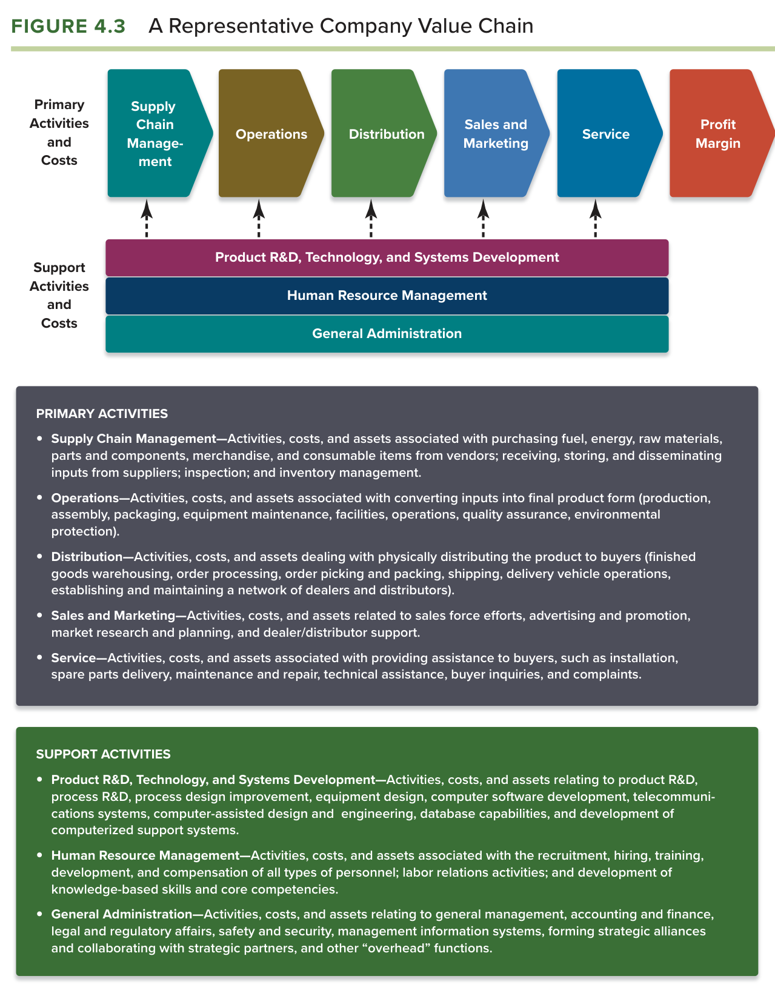
Figure 4.3 membagi aktivitas menjadi aktivitas utama, yaitu manajemen rantai pasok, operasi, distribusi, penjualan dan pemasaran, serta layanan, dan aktivitas pendukung, yaitu riset dan pengembangan produk, teknologi, dan pengembangan sistem, manajemen sumber daya manusia, dan administrasi umum, dengan margin laba sebagai komponen terakhir (Thompson et al., 2024, hlm. 106). Buku menegaskan bahwa daftar itu ilustratif, bukan definitif, karena aktivitas utama berbeda menurut bisnis: pada peritel Nordstrom aktivitas utamanya adalah pemilihan barang dan tata letak toko, pada Marriott adalah reservasi dan operasi hotel, dan manajemen rantai pasok yang krusial bagi Boeing tidak ada pada Goldman Sachs. Karena itu, langkah pertama menerapkan rantai nilai pada klub sepak bola adalah merumuskan ulang aktivitas utamanya, bukan memaksakan kotak-kotak Figure 4.3.
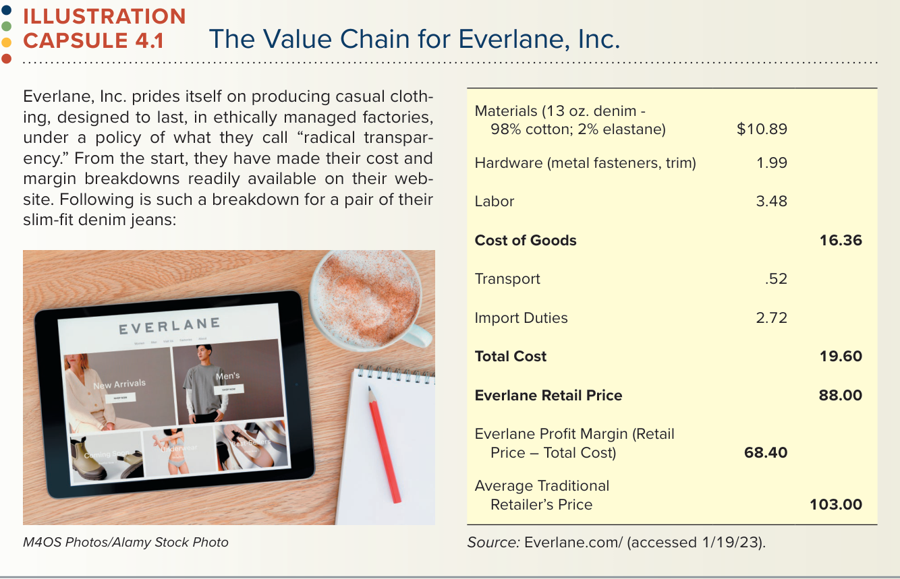
Illustration Capsule 4.1 menunjukkan hasil rantai nilai dalam angka. Untuk sepasang celana jeans Everlane, bahan 10,89 dolar, perangkat keras 1,99 dolar, dan tenaga kerja 3,48 dolar membentuk harga pokok 16,36 dolar; ditambah transportasi 0,52 dolar dan bea impor 2,72 dolar, biaya total 19,60 dolar; dengan harga jual 88 dolar, margin Everlane 68,40 dolar, dibandingkan harga peritel tradisional 103 dolar (Thompson et al., 2024, hlm. 107). Angka-angka ini adalah contoh penetapan biaya berbasis aktivitas yang menurut buku diperlukan untuk menentukan biaya setiap aktivitas rantai nilai; tingkat kerinciannya bergantung pada seberapa berharga mengetahui biaya aktivitas spesifik, dan kerincian lebih tinggi diperlukan ketika perusahaan menemukan kerugian biaya dan ingin menemukan sumbernya (Thompson et al., 2024, hlm. 107). Perbandingan rantai nilai antar pesaing juga bernilai bahkan tanpa angka, karena pesaing dalam industri yang sama dapat melakukan aktivitas yang berbeda, seperti produsen yang membuat semua komponen sendiri dibandingkan yang hanya merakit.
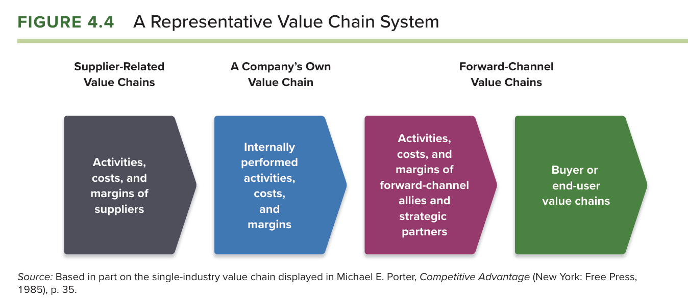
Biaya internal perusahaan sendiri mungkin tidak cukup untuk menilai daya saingnya, karena perbedaan biaya dan harga antar pesaing dapat berasal dari aktivitas pemasok atau dari sekutu distribusi yang mengantarkan produk ke pengguna akhir, sehingga seluruh sistem rantai nilai menjadi relevan (Thompson et al., 2024, hlm. 107 sampai 108). Figure 4.4 menggambarkan sistem itu sebagai empat mata rantai: aktivitas, biaya, dan margin pemasok; aktivitas yang dilakukan sendiri oleh perusahaan; aktivitas, biaya, dan margin sekutu saluran depan; dan rantai nilai pembeli atau pengguna akhir. Bagi CEO, gambar ini mengingatkan bahwa harga yang dibayar pelanggan akhir adalah jumlah dari margin seluruh mata rantai, sehingga kerugian biaya perusahaan dapat diatasi bukan hanya di dalam pabrik sendiri tetapi juga dengan mengubah hubungan dengan pemasok dan penyalur.
Benchmarking adalah membandingkan bagaimana perusahaan yang berbeda melakukan berbagai aktivitas rantai nilai, lalu membandingkan biaya dan efektivitas aktivitas itu antar perusahaan, dengan tujuan menemukan cara terbaik melakukan suatu aktivitas dan menirunya (Thompson et al., 2024, hlm. 109). Praktik terbaik adalah metode melakukan aktivitas yang secara konsisten memberi hasil lebih unggul dari pendekatan lain, dan untuk memenuhi syarat ia harus sudah dipakai sekurang-kurangnya satu perusahaan dan terbukti konsisten lebih efektif dalam menurunkan biaya, meningkatkan mutu, mempersingkat waktu, atau meningkatkan keselamatan. Buku memberi contoh Xerox yang memelopori benchmarking terhadap perusahaan kelas dunia di industri mana pun, Toyota yang mendapat gagasan persediaan tepat waktu dari cara supermarket mengisi rak, dan Southwest Airlines yang mempersingkat waktu putar pesawat dengan mempelajari kru pit balap mobil, dan mencatat bahwa lebih dari 80 persen perusahaan Fortune 500 memakai benchmarking.
Illustration Capsule 4.2 menunjukkan benchmarking dalam industri surya dengan ukuran biaya energi yang diratakan per kilowatt jam. SunPower memakai benchmarking pada 2008 untuk menargetkan penurunan biaya 50 persen pada 2012, tetapi biaya industri turun 78 persen sehingga perusahaan harus menyederhanakan struktur, melepas aset non-inti, dan beralih ke segmen residensial dan komersial; data tolok ukur kuartalan dari National Renewable Energy Laboratory memungkinkan perusahaan membandingkan biaya komponennya dengan industri (Thompson et al., 2024, hlm. 110). Pelajarannya adalah bahwa benchmarking harus diulang, karena tolok ukur bergerak. Bagian tersulit benchmarking menurut buku bukan memutuskan melakukannya melainkan memperoleh data pesaing, dan tiga sumbernya adalah laporan publik dan analis, kunjungan lapangan, dan lembaga konsultan serta asosiasi yang mengumpulkan data tanpa menyebut nama perusahaan (Thompson et al., 2024, hlm. 110 sampai 111). Illustration Capsule 4.3 memuat kode etik benchmarking dengan prinsip legalitas, pertukaran, kerahasiaan, penggunaan, kontak pihak pertama, kontak pihak ketiga, dan persiapan, yang intinya melarang membicarakan biaya dengan pesaing apabila biaya adalah unsur penetapan harga (Thompson et al., 2024, hlm. 111).
Dalam silabus, benchmarking adalah framework pendamping untuk Bab 5, sehingga modul Bab 5 membahasnya lebih jauh sebagai alat penetapan strategi. Pada Bab 4, kedudukannya adalah sebagai penyedia data: buku menyatakan bahwa membandingkan biaya aktivitas dengan pesaing memberi bukti keras tentang apakah perusahaan kompetitif dalam biaya, dan bahwa analisis rantai nilai dan benchmarking menyediakan jenis data yang dibutuhkan untuk menilai secara objektif apakah sumber daya dan kapabilitas perusahaan benar-benar lebih unggul (Thompson et al., 2024, hlm. 111 dan 114). Dengan kata lain, VRIN menemukan aset yang berpotensi unggul, dan benchmarking membuktikan apakah potensi itu terwujud.
Apabila rantai nilai dan benchmarking mengungkap kerugian biaya atau nilai, buku memberi tiga wilayah perbaikan: aktivitas internal perusahaan, bagian pemasok, dan bagian saluran depan (Thompson et al., 2024, hlm. 112). Untuk aktivitas internal, delapan pendekatan menurunkan biaya adalah menerapkan praktik terbaik terutama pada aktivitas berbiaya tinggi, menghilangkan aktivitas dengan merombak rantai nilai, merelokasi aktivitas berbiaya tinggi ke wilayah yang lebih murah, mengalihdayakan aktivitas kepada vendor yang lebih murah, berinvestasi pada teknologi penghemat biaya, mencari jalan memutar aktivitas yang mahal seperti mendesain di sekitar paten pihak lain, mendesain ulang produk agar lebih murah diproduksi, dan sebagai upaya terakhir menutup kerugian internal dengan menghemat di pemasok atau saluran. Untuk memperbaiki proposisi nilai, tiga pendekatannya adalah praktik terbaik pada aktivitas pencipta nilai, praktik terbaik pemasaran dan manajemen merek, dan realokasi sumber daya ke aktivitas yang berdampak besar pada nilai (Thompson et al., 2024, hlm. 112 sampai 113).
Untuk bagian pemasok, kerugian biaya diatasi dengan menekan harga, beralih ke input pengganti, dan berkolaborasi menemukan penghematan bersama seperti pengiriman tepat waktu, atau dalam kasus tertentu integrasi ke belakang; proposisi nilai diperkuat dengan memilih pemasok bermutu tinggi dan melibatkan mereka dalam desain. Untuk saluran depan, biaya diatasi dengan menekan penyalur, berkolaborasi seperti jendela pengiriman dua hari Walmart dan Target, atau beralih ke saluran yang lebih murah seperti penjualan langsung melalui internet; diferensiasi diperkuat dengan iklan bersama, perjanjian eksklusif, dan standar serta pelatihan bagi mitra saluran seperti Harley-Davidson dan Papa John's (Thompson et al., 2024, hlm. 113). Daftar ini adalah gudang alternatif bagi bagian solusi term paper, dan cara berpikir dosen menuntut agar alternatif yang dipilih disebut secara eksplisit sebagai salah satu dari pendekatan ini beserta bukti bahwa ia mengatasi kerugian yang ditemukan.
Aktivitas pencipta nilai dapat memberi keunggulan dengan dua cara: berkontribusi pada efisiensi dan biaya yang lebih rendah, atau menjadi dasar diferensiasi sehingga pelanggan bersedia membayar lebih (Thompson et al., 2024, hlm. 114). Keunggulan biaya menuntut upaya yang terus-menerus dan melibatkan setiap aktivitas, dengan sasaran pengurangan biaya berkelanjutan, seperti Ryanair, Nucor, dan Carrefour. Keunggulan diferensiasi juga menuntut upaya berkelanjutan, karena reputasi dan merek dibangun perlahan melalui investasi dan pesan yang konsisten, seperti Rolex untuk status, Zappos untuk layanan, dan FedEx untuk keandalan. Buku menegaskan hubungan erat antara aktivitas dan aset: kapabilitas adalah kapasitas untuk bertindak, sedangkan aktivitas adalah tindakan itu sendiri, tempat kapabilitas benar-benar diuji.
Hubungan itu bersifat dua arah dan dinamis. Aset yang bernilai dan langka memberi potensi keunggulan, dan potensi itu terwujud ketika aset digunakan dalam aktivitas; sebaliknya, aktivitas yang dilakukan berulang dengan investasi berkelanjutan membentuk kapabilitas, yang dapat naik menjadi kompetensi inti apabila dijadikan landasan strategi, dan menjadi kompetensi khas apabila melampaui pesaing (Thompson et al., 2024, hlm. 114 sampai 115). Jalan menuju keunggulan kompetitif dengan demikian dimulai dari upaya manajemen membangun keahlian pada aktivitas tertentu, dan inilah yang menjelaskan mengapa sistem Ferguson, yang dimulai dari perluasan jaringan pencari bakat dan disiplin latihan pada 1986, baru menghasilkan gelar liga pada 1993 dan puncaknya pada 1999.
Analisis sumber daya, rantai nilai, dan benchmarking perlu tetapi tidak cukup, karena dua pertanyaan tersisa: bagaimana peringkat perusahaan dibanding pesaing pada setiap faktor penentu keberhasilan, dan secara keseluruhan apakah perusahaan memiliki keunggulan atau kerugian kompetitif bersih (Thompson et al., 2024, hlm. 115). Buku memberi metode lima langkah. Langkah pertama, menyusun daftar faktor kunci keberhasilan industri dan ukuran kekuatan lain, biasanya enam sampai sepuluh. Langkah kedua, memberi bobot pada setiap ukuran menurut kepentingannya dengan jumlah bobot satu. Langkah ketiga, memberi skor setiap pesaing pada skala satu sampai sepuluh dan mengalikannya dengan bobot. Langkah keempat, menjumlahkan skor terbobot untuk memperoleh ukuran kekuatan keseluruhan. Langkah kelima, menarik simpulan tentang besar keunggulan atau kerugian bersih dan mencatat area kekuatan dan kelemahan (Thompson et al., 2024, hlm. 115 sampai 116).
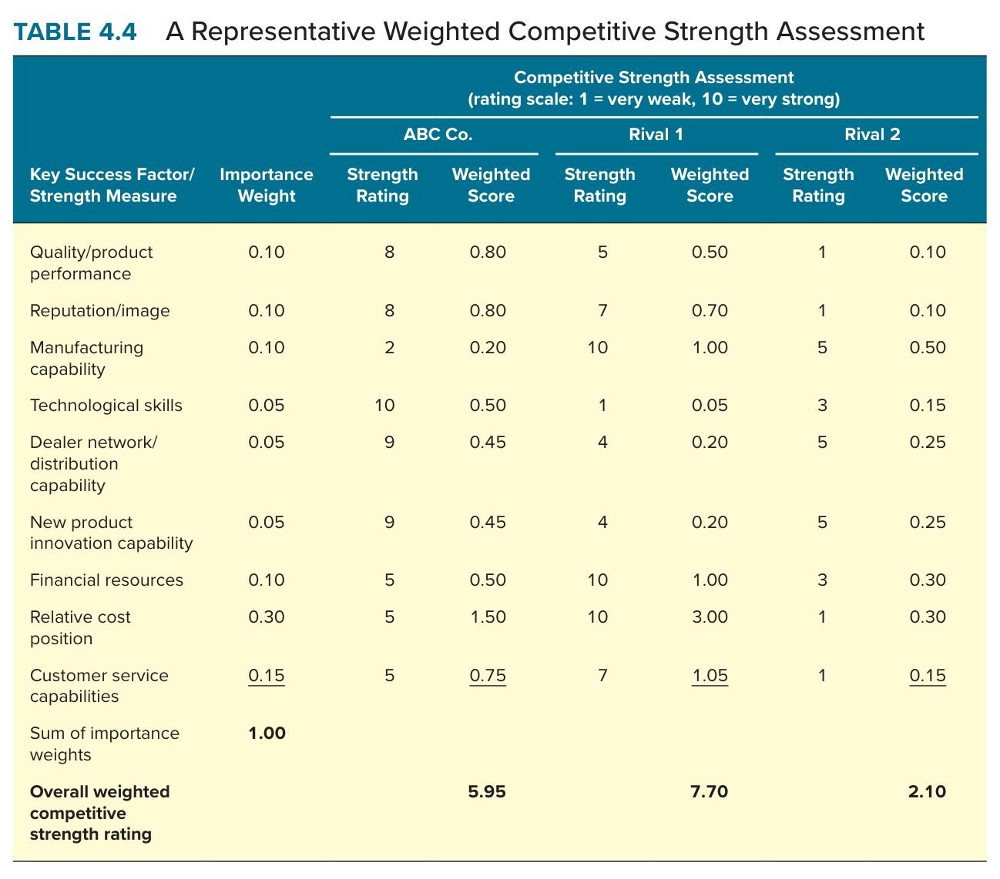
Table 4.4 memperlihatkan perusahaan hipotetis ABC dengan skor 5,95 melawan pesaing pertama 7,70 dan pesaing kedua 2,10, dengan posisi biaya relatif berbobot 0,30 sebagai ukuran yang paling menentukan. ABC unggul pada mutu, reputasi, teknologi, dan inovasi, tetapi kalah pada kapabilitas manufaktur, sumber daya keuangan, dan biaya, sehingga rentan terhadap pemotongan harga oleh pesaing pertama (Thompson et al., 2024, hlm. 116 sampai 118). Buku menarik dua aturan tindakan dari skor semacam ini: ketika perusahaan kuat di area yang lemah bagi pesaing, langkah ofensif untuk mengeksploitasi kelemahan itu masuk akal; ketika perusahaan lemah di area yang kuat bagi pesaing, langkah defensif untuk mengurangi kerentanan masuk akal. Bagi CEO, nilai metode ini terletak pada pemaksaan untuk memberi bobot, karena memberi bobot berarti menyatakan secara terbuka faktor mana yang paling menentukan, dan pernyataan itulah yang dapat diperdebatkan dan diuji.
Langkah analitis terakhir dan terpenting adalah menetapkan dengan tepat isu strategis apa yang harus ditangani dan diselesaikan manajemen agar perusahaan lebih berhasil, dengan menggabungkan hasil analisis industri dan evaluasi situasi internal (Thompson et al., 2024, hlm. 118). Daftar prioritas selalu berpusat pada rumusan bagaimana cara, apa yang harus dilakukan tentang, dan apakah perlu, misalnya bagaimana menangkal pesaing asing baru, apa yang harus dilakukan tentang pemotongan harga pesaing, apakah perlu mengakuisisi pesaing yang memiliki kekuatan yang hilang, dan apakah perlu berpindah kelompok strategis. Buku menegaskan bahwa tujuan daftar ini adalah mengidentifikasi isu, bukan memutuskan tindakan, karena keputusan tindakan datang kemudian ketika strategi dirumuskan. Apabila isu dalam daftar relatif kecil, strategi cukup disempurnakan; apabila isunya serius, merumuskan strategi yang lebih baik harus berada di puncak agenda manajemen.
Kedudukan daftar prioritas dalam kelas Dr. Rangga sangat penting, karena ia adalah jembatan antara diagnosis dan solusi dalam term paper dan antara komponen masalah dan komponen alternatif dalam analisis kasus. Rumusan isu sebagai pertanyaan eksplisit yang dituntut silabus (Almahendra, 2026) sama persis dengan rumusan bagaimana, apa, dan apakah yang dituntut buku. Seorang CEO yang mengakhiri analisis internal tanpa daftar prioritas telah melakukan diagnosis tanpa menulis resep, dan rapat strategi berikutnya akan kembali membahas gejala alih-alih penyakit.
Bagian ini menjalankan keenam pertanyaan Bab 4 pada Manchester United pada Juli 2009 sebagaimana digambarkan kasus Grant (2010), dengan urutan yang sama seperti buku agar mahasiswa melihat bagaimana jawaban setiap pertanyaan menjadi masukan bagi pertanyaan berikutnya. Seluruh angka diambil dari tabel kasus dan lampiran laporan keuangan klub, dan perhitungan rasio adalah perhitungan penyusun dari angka-angka tersebut.
Dengan Figure 4.1, strategi bisnis Manchester United dapat dirumuskan sebagai memenangkan gelar secara konsisten melalui sistem pengembangan pemain muda yang dipadukan dengan pemain berpengalaman, lalu mengubah prestasi itu menjadi pendapatan melalui merek global. Strategi fungsionalnya terlihat jelas dalam kasus: pada sumber daya manusia, jaringan pencari bakat lebih dari dua puluh orang dan akademi pemain muda; pada operasi, disiplin latihan dan rotasi skuad; pada pemasaran, sub-merek seperti Fred the Red dan Red Devil, anak perusahaan Manchester United International sejak 1998, dan tur Asia; pada keuangan, kebijakan menjual pemain yang dinilai lebih tinggi oleh klub lain sehingga belanja transfer bersih moderat, termasuk penjualan Cristiano Ronaldo seharga 80 juta poundsterling pada 2009. Pada kotak cakupan geografis, klub memperluas ke Asia dengan 80 juta penggemar dan 1,2 juta pemegang kartu kredit klub di Korea Selatan, dan pada kotak kemitraan, kontrak sponsor AON, Nike, dan mitra telekomunikasi di Indonesia dan India (Grant, 2010).
Indikator kinerja menunjukkan strategi itu bekerja sangat baik. Pendapatan naik dari 116,0 juta poundsterling pada 2000 menjadi 257,1 juta pada 2008, laba setelah pajak naik dari 12,0 juta menjadi 46,8 juta, dan klub menduduki peringkat pertama Eropa dengan 1.460 poin kinerja untuk 2000 sampai 2009 (Grant, 2010). Dengan Table 4.1, margin laba operasi 2008 adalah 42,8 dibagi 257,1 atau 16,7 persen, margin laba bersih 18,2 persen, dan pengembalian atas ekuitas 46,8 dibagi 294,0 atau 15,9 persen, sedikit di atas rentang rata-rata 12 sampai 15 persen yang disebut buku. Rasio yang paling menjelaskan industri ini, yaitu upah terhadap pendapatan, sekitar 50 persen untuk Manchester United dan Arsenal dibandingkan 62 persen rata-rata Liga Primer dan 81 persen Chelsea. Simpulan pertanyaan pertama adalah bahwa strategi tidak perlu diubah, dan pertanyaan yang tersisa adalah apakah strategi itu dapat bertahan tanpa orang yang membangunnya.
Kekuatan klub, dengan Table 4.2, adalah merek dan basis penggemar global yang tidak tertandingi di olahraga menurut AON, kompetensi inti dalam pengembangan pemain muda yang menghasilkan generasi 1992 sampai 2003 dan generasi 2003 sampai 2008, profitabilitas tertinggi di antara klub Eropa, dan stadion Old Trafford yang diperluas 7.500 kursi pada 2006. Kelemahannya adalah utang 616 juta poundsterling warisan akuisisi, ketergantungan sistem pada satu orang berusia 68 tahun, dan dewan yang seluruhnya terdiri atas keluarga pemilik. Peluangnya adalah monetisasi Asia yang baru dimulai, pertumbuhan hak siar yang naik 43 persen dalam setahun, dan kas 80 juta poundsterling dari penjualan Ronaldo. Ancamannya adalah inflasi harga pemain yang didorong Manchester City dengan belanja 185 juta poundsterling dalam satu musim, pemilik asing kaya di Chelsea dan Manchester City yang tidak terikat disiplin laba, dan risiko gagal lolos ke Liga Champions yang bernilai lebih dari 30 juta euro per musim dari UEFA saja (Grant, 2010).
Simpulan yang dituntut Figure 4.2 adalah sebagai berikut. Kekuatan klub cukup besar untuk menutupi kelemahan utangnya selama prestasi bertahan, karena laba operasi sebelum penyusutan 101,9 juta euro melampaui beban bunga; tetapi kekuatan itu tidak cukup untuk menutupi kelemahan ketergantungan pada Ferguson, karena kekuatan itu sendiri sebagian besar adalah hasil kerjanya. Tindakan yang mengikuti adalah memakai kekuatan merek dan laba sebagai landasan untuk melindungi sistem pengembangan pemain selama transisi, memperbaiki kelemahan ketergantungan dengan melembagakan sistem itu sebelum Ferguson pergi, mengejar peluang Asia yang cocok dengan kekuatan merek, dan bertahan dari inflasi harga pemain dengan tetap mengandalkan pengembangan internal alih-alih ikut perang belanja.
Dengan Table 4.3, sumber daya berwujud klub adalah Old Trafford, kas dari penjualan Ronaldo, dan kontrak pemain; sumber daya tak berwujudnya adalah merek dan sub-merek, basis penggemar 80 juta orang di Asia, hubungan dengan sponsor, budaya disiplin yang ditanamkan Ferguson, dan pengetahuan jaringan pencari bakat. Kapabilitasnya, yang dikenali dengan cara pertama buku yaitu mulai dari sumber daya, adalah kemampuan menemukan bakat sebelum matang, kemampuan mengembangkan bakat itu di akademi, kemampuan memadukan pemain muda dengan pemain berpengalaman menjadi tim yang bermain dengan satu semangat, kemampuan membangun ulang skuad tanpa kehilangan prestasi, dan kemampuan komersial mengubah dukungan penggemar menjadi pendapatan. Keempat kapabilitas olahraga itu bersama-sama adalah ikatan sumber daya dalam pengertian buku, dan ikatan inilah yang di dalam kasus disebut sistem Ferguson.
| Aset | Bernilai | Langka | Sulit ditiru | Tidak tergantikan | Simpulan |
|---|---|---|---|---|---|
| Pemain bintang (misalnya Ronaldo, Rooney) | Ya | Ya | Tidak, dapat dibeli klub lain | Tidak, uang menggantikannya | Keunggulan sementara; Ronaldo pindah ke Real Madrid membuktikannya. |
| Merek dan basis penggemar global | Ya | Ya, hanya Real Madrid yang setara | Ya, dibangun sejak era Busby dan tragedi 1958 | Sebagian, pemilik kaya dapat membeli perhatian tetapi bukan warisan | Lolos empat tes; sumber keunggulan komersial yang bertahan. |
| Sistem Ferguson sebagai ikatan sumber daya | Ya | Ya | Ya, kompleksitas sosial dan ambiguitas kausal tinggi | Sebagian, Real Madrid dan Chelsea mencoba menggantinya dengan uang tanpa hasil setara | Lolos, tetapi kelekatannya pada organisasi belum terbukti tanpa Ferguson. |
| Old Trafford | Ya | Ya | Ya, tetapi Arsenal membangun stadion baru 430 juta poundsterling | Tidak sepenuhnya | Keunggulan pendapatan hari pertandingan yang dapat disamai dengan modal. |
| Kekuatan keuangan | Ya | Tidak, Chelsea dan Manchester City memiliki pemilik yang lebih kaya | Tidak | Tidak | Kesetaraan paling banyak; utang menjadikannya kelemahan relatif. |
Tabel di atas menunjukkan apa yang dituntut dosen: kejujuran bahwa aset yang paling terlihat, yaitu pemain, justru paling tidak lolos VRIN, dan aset yang paling lolos, yaitu sistem, justru paling terancam oleh pensiunnya satu orang. Ambiguitas kausal yang membuat sistem itu sulit ditiru pesaing juga membuatnya sulit diwariskan, karena kasus sendiri mengakui bahwa penentu kinerja tim tetap misterius dan bahwa pelatih yang berhasil di satu tim sering gagal di tim lain (Grant, 2010). Bagi CEO, inilah paradoks yang harus dipecahkan: aset yang paling berharga adalah yang paling sedikit dipahami, sehingga melembagakannya menuntut usaha sadar untuk menuliskan, membagi, dan menugaskan bagian-bagiannya kepada orang yang berbeda sebelum pembangunnya pergi.
Manchester United di bawah Ferguson memperlihatkan kapabilitas dinamis dalam pengertian buku, yaitu kemampuan rutin memperbarui aset kompetitif. Skuad dibangun ulang tiga kali: 1986 sampai 1993 dengan menyingkirkan pemain lama dan membeli Hughes, Ince, Cantona, dan Keane; 1994 sampai 1999 dengan generasi akademi Giggs, Beckham, Scholes, dan Neville bersaudara yang mencapai tiga gelar sekaligus pada 1999; dan 2003 sampai 2008 dengan menjual Beckham, Keane, dan Stam lalu membeli Ferdinand, Ronaldo, Rooney, dan Vidic yang memenangkan Piala Eropa 2008 (Grant, 2010). Pola jual mahal dan bangun kembali itu adalah jalur pertama kapabilitas dinamis buku, yaitu perbaikan berkelanjutan aset yang ada, dan penjualan Ronaldo pada 2009 adalah awal siklus keempat. Pertanyaan strategisnya adalah apakah kapabilitas dinamis itu milik klub atau milik Ferguson, dan jawabannya menentukan apakah siklus keempat akan berhasil tanpa dia.
Mengikuti anjuran buku agar aktivitas utama dirumuskan sesuai bisnis, rantai nilai klub sepak bola dapat disusun sebagai berikut. Aktivitas utama pertama adalah pencarian dan perekrutan bakat, yang setara dengan manajemen rantai pasok. Aktivitas kedua adalah latihan dan pengembangan pemain, yang setara dengan operasi. Aktivitas ketiga adalah pertandingan, yang merupakan produk inti dan menentukan pendapatan hari pertandingan serta kualifikasi Liga Champions. Aktivitas keempat adalah komersialisasi, yaitu siaran, sponsor, dan lisensi, yang setara dengan penjualan dan pemasaran. Aktivitas kelima adalah layanan penggemar, mulai dari toko dan museum sampai kartu kredit dan sekolah sepak bola. Aktivitas pendukungnya adalah stadion dan fasilitas latihan, keuangan dan manajemen kontrak, sumber daya manusia termasuk staf pelatih, dan administrasi umum. Margin laba muncul sebagai selisih antara pendapatan komersial dan biaya pemain.
Penetapan biaya berbasis aktivitas pada rantai ini menunjukkan bahwa biaya terbesar terletak pada aktivitas kedua dan ketiga dalam bentuk upah pemain, dan di sinilah perbandingan antar pesaing paling tajam. Manchester United mengeluarkan sekitar setengah pendapatannya untuk upah, Chelsea 81 persen, dan rata-rata Liga Primer 62 persen (Grant, 2010). Perbedaan itu bukan karena Manchester United membayar lebih murah per pemain, karena Ronaldo adalah pemain dengan gaji tertinggi keempat di dunia, melainkan karena aktivitas pertama dan kedua, yaitu pencarian dan pengembangan bakat, memasok pemain berkualitas tinggi dengan biaya akuisisi yang rendah. Dengan kata lain, keunggulan biaya klub pada aktivitas pertandingan berasal dari aktivitas hulu, persis seperti keunggulan biaya AirAsia pada penerbangan berasal dari waktu putar dan utilisasi. Pada sisi nilai, aktivitas komersialisasi dan layanan penggemar adalah tempat Manchester United dan Real Madrid disebut kasus sebagai klub paling terfokus secara komersial di Eropa, dan sub-merek serta anak perusahaan internasional adalah praktik terbaik yang ditiru klub-klub lain.
Kasus menyediakan data yang memungkinkan benchmarking dalam pengertian buku, yaitu membandingkan efektivitas aktivitas antar perusahaan. Pada aktivitas komersialisasi, pendapatan Real Madrid 365,8 juta euro melampaui Manchester United 324,8 juta, tetapi laba operasi sebelum penyusutan Real Madrid hanya 51,6 juta dibandingkan 101,9 juta, sehingga margin operasi Manchester United 31,4 persen hampir dua kali lipat margin Real Madrid 14,1 persen. Barcelona mencapai 22,3 persen, Arsenal 19,3 persen, Bayern Munich 12,7 persen, dan Chelsea negatif. Pada ukuran pengembalian atas penjualan sebelum pajak 2000 sampai 2006, Manchester United mencapai 12,6 persen, Arsenal 5,6 persen, Bayern 4,7 persen, Real Madrid 0,4 persen, Chelsea minus 60,4 persen, dan Inter minus 78,4 persen (Grant, 2010).
Pembacaan praktik terbaik dari data ini menunjukkan dua model yang berhasil dan satu yang gagal. Model membeli pemain terbaik, yang dijalankan Real Madrid dan Chelsea, menghasilkan pendapatan tinggi tetapi laba rendah atau negatif, karena inflasi harga pemain dan upah menyerap seluruh pendapatan tambahan. Model mengembangkan pemain sendiri, yang dijalankan Barcelona, Arsenal, dan Bayern, menghasilkan laba positif dengan pendapatan yang lebih rendah. Manchester United menggabungkan keduanya, membeli pemain bintang tetapi menjualnya ketika klub lain menilai lebih tinggi, dan hasilnya adalah laba tertinggi di antara semua klub. Benchmarking dengan demikian membuktikan secara objektif apa yang VRIN hanya duga: bahwa sistem pengembangan dan perdagangan pemain adalah aset yang benar-benar unggul, bukan sekadar cerita. Pelajaran CEO dari perbandingan ini adalah bahwa tolok ukur yang benar bagi klub bukan pendapatan, yang Real Madrid menangkan, melainkan margin, karena margin mengukur seberapa efisien aktivitas hulu memasok aktivitas hilir.
Mengikuti lima langkah buku, faktor kunci keberhasilan industri sepak bola elit Eropa dari kasus adalah kualitas pemain, sistem kepelatihan dan pengembangan bakat, merek dan basis penggemar global, kekuatan keuangan termasuk dukungan pemilik, stadion dan pendapatan hari pertandingan, dan kapabilitas komersial. Bobot diberikan dengan pertimbangan bahwa kasus menyatakan kualitas pemain sebagai penentu kritis kinerja tim, tetapi bahwa kemampuan memperoleh pemain bergantung pada keuangan dan sistem pengembangan. Skor pada skala satu sampai sepuluh berikut adalah penilaian penyusun dari bukti kasus dengan tingkat keyakinan [Kemungkinan Besar], dan mahasiswa dianjurkan mengubah bobot untuk menguji kepekaan simpulan.
| Faktor kunci keberhasilan | Bobot | Man Utd | Skor | Real Madrid | Skor | Chelsea | Skor | Arsenal | Skor |
|---|---|---|---|---|---|---|---|---|---|
| Kualitas pemain saat ini | 0,25 | 8 | 2,00 | 9 | 2,25 | 8 | 2,00 | 7 | 1,75 |
| Sistem kepelatihan dan pengembangan bakat | 0,20 | 9 | 1,80 | 4 | 0,80 | 4 | 0,80 | 8 | 1,60 |
| Merek dan basis penggemar global | 0,20 | 10 | 2,00 | 9 | 1,80 | 6 | 1,20 | 6 | 1,20 |
| Kekuatan keuangan dan dukungan pemilik | 0,15 | 5 | 0,75 | 8 | 1,20 | 9 | 1,35 | 4 | 0,60 |
| Stadion dan pendapatan hari pertandingan | 0,10 | 9 | 0,90 | 8 | 0,80 | 5 | 0,50 | 8 | 0,80 |
| Kapabilitas komersial | 0,10 | 9 | 0,90 | 9 | 0,90 | 5 | 0,50 | 6 | 0,60 |
| Skor kekuatan kompetitif keseluruhan | 1,00 | 8,35 | 7,75 | 6,35 | 6,55 |
Simpulan langkah kelima adalah bahwa Manchester United memiliki keunggulan kompetitif bersih yang nyata tetapi tidak besar terhadap Real Madrid, dan keunggulan yang jelas terhadap Chelsea dan Arsenal. Sumber keunggulannya terkonsentrasi pada dua faktor, yaitu sistem pengembangan bakat dan merek, sedangkan kelemahannya terkonsentrasi pada satu faktor, yaitu keuangan. Aturan tindakan buku memberi arah: langkah ofensif masuk akal pada merek dan sistem pengembangan di mana Chelsea lemah, dan langkah defensif masuk akal pada keuangan di mana Chelsea dan Real Madrid kuat. Uji kepekaan yang paling penting adalah menurunkan skor sistem kepelatihan Manchester United dari sembilan menjadi lima untuk menggambarkan pensiunnya Ferguson tanpa pengganti yang setara; dengan itu skor keseluruhan turun menjadi 7,55 dan berada di bawah Real Madrid, yang berarti keunggulan bersih klub bergantung sepenuhnya pada keberhasilan suksesi.
Dengan rumusan bagaimana, apa, dan apakah yang dituntut buku, daftar prioritas klub pada Juli 2009 adalah sebagai berikut. Pertama, bagaimana mempertahankan sistem pencarian, pengembangan, dan pembangunan tim setelah Ferguson pensiun, yang merupakan isu paling mendesak karena menyangkut aset yang lolos VRIN. Kedua, apakah kas 80 juta poundsterling dari penjualan Ronaldo dibelanjakan untuk satu pemain bintang seperti Ribery atau untuk beberapa pemain muda sesuai sistem. Ketiga, apa yang harus dilakukan tentang inflasi harga pemain yang didorong Manchester City, yang mengancam biaya akuisisi bakat. Keempat, bagaimana mengurangi beban utang 616 juta poundsterling tanpa mengorbankan investasi pemain. Kelima, bagaimana mengubah 80 juta penggemar Asia menjadi pendapatan yang sebanding dengan basis Eropa. Isu pertama dan keempat serius dan menuntut perumusan strategi baru; isu kedua, ketiga, dan kelima dapat ditangani dengan menyempurnakan strategi yang ada.
Bagian ini menerapkan empat komponen analisis kasus silabus (Almahendra, 2026) pada isu pertama dalam daftar prioritas, yaitu bagaimana Manchester United mempertahankan sistem yang menjadi sumber keunggulannya setelah Ferguson pensiun.
Tujuan klub ada tiga: mempertahankan posisi empat besar Liga Primer setiap musim agar pendapatan Liga Champions lebih dari 30 juta euro dan daya tarik sponsor terjaga, mempertahankan profitabilitas dengan upah sekitar 50 persen pendapatan, dan mempertahankan sistem pengembangan bakat yang lolos VRIN. Penghalangnya juga tiga: Ferguson berusia 68 tahun dan sistem itu berpusat padanya dengan ambiguitas kausal tinggi, utang 616 juta poundsterling membatasi kemampuan menutup kesalahan transisi dengan belanja, dan pesaing dengan pemilik kaya sedang menaikkan harga pemain sehingga kegagalan sistem internal akan mahal untuk diganti dengan pembelian (Grant, 2010). Masalahnya adalah bagaimana memindahkan kapabilitas yang melekat pada seseorang menjadi kapabilitas yang melekat pada organisasi, dalam jangka waktu yang tidak ditentukan oleh klub melainkan oleh usia orang itu.
Alternatif pertama adalah Kesinambungan Internal, yaitu mengangkat salah satu asisten Ferguson seperti Queiroz atau Phelan sebagai manajer agar sistem dipertahankan sepenuhnya. Alternatif kedua adalah Pemimpin Terbukti dari Luar, yaitu mengangkat manajer berwibawa seperti Mourinho dan menerima bahwa sistem akan dirombak dan dibangun ulang menurut caranya. Alternatif ketiga adalah Pelembagaan Sistem sebelum Suksesi, yaitu memisahkan sistem menjadi fungsi-fungsi yang dipegang orang berbeda, seperti direktur pencarian bakat, direktur akademi, dan direktur sepak bola yang menetapkan filosofi permainan dan kebijakan transfer, lalu mengangkat manajer tim yang bekerja di dalam struktur itu, entah dari dalam atau dari luar.
Isu pertama menanyakan apakah sistem Ferguson dapat dipisahkan dari Ferguson. Uji VRIN pada Bagian C.3 menjawab bahwa sistem itu adalah ikatan sumber daya dengan komponen yang dapat dikenali, yaitu jaringan pencari bakat, akademi, disiplin latihan, filosofi permainan, dan kebijakan transfer, sehingga sebagian besar dapat dilembagakan, meskipun kemampuan memotivasi dan mengendalikan bintang mungkin tidak. Isu kedua menanyakan apakah orang dalam sanggup berwibawa di hadapan bintang. Kasus menjawab ragu, dan prinsip bahwa tidak ada pemain yang lebih besar dari klub menuntut wibawa itu, sehingga alternatif pertama berisiko pada komponen yang paling sulit dilembagakan. Isu ketiga menanyakan apakah neraca klub sanggup menanggung perombakan total. Benchmarking pada Bagian C.6 menjawab tidak, karena model membeli pemain yang akan mengikuti perombakan ala Mourinho menghasilkan laba negatif di Chelsea dan Real Madrid, dan klub dengan utang 616 juta poundsterling tidak dapat meniru model itu, sehingga alternatif kedua gugur.
Secara deduktif, alternatif ketiga terpilih. Premis pertama, aset yang lolos VRIN adalah sistem, bukan orang, sehingga tugas utama adalah melindungi sistem. Premis kedua, sistem itu adalah ikatan sumber daya yang komponennya dapat dipisahkan, sehingga pelembagaan mungkin dilakukan. Premis ketiga, neraca tidak sanggup menanggung model membeli, sehingga perombakan total gugur. Premis keempat, wibawa di hadapan bintang adalah komponen yang paling tidak dapat dilembagakan, sehingga manajer tim harus dipilih berdasarkan wibawa tetapi diikat oleh struktur agar tidak merombak sistem. Secara kuantitatif, biaya kegagalan transisi adalah kehilangan pendapatan Liga Champions lebih dari 30 juta euro per musim ditambah penurunan pendapatan hari pertandingan dan sponsor, dibandingkan biaya pelembagaan berupa beberapa posisi direktur yang jauh lebih kecil dari upah satu pemain bintang; dan disiplin upah 50 persen pendapatan, yang menghasilkan margin operasi 31,4 persen, harus dijadikan batas yang tidak boleh dilanggar manajer baru.
Sebagai catatan pembelajaran di luar teks kasus dengan tingkat keyakinan [Pasti], Ferguson akhirnya pensiun pada 2013 dan klub memilih jalan yang dekat dengan alternatif pertama dengan mengangkat David Moyes, yang diberhentikan sebelum musim pertamanya berakhir, dan klub tidak memenangkan gelar liga lagi dalam satu dekade berikutnya. Hasil itu tidak membuktikan alternatif ketiga pasti berhasil, tetapi membuktikan bahwa isu pertama dan kedua pada Bagian D.3 nyata, dan bahwa analisis Bab 4 yang jujur pada 2009 sudah dapat melihat risiko yang kemudian terjadi.
| Tindakan | Indikator kinerja | Jadwal | Penanggung jawab | Risiko utama |
|---|---|---|---|---|
| Mendokumentasikan dan memisahkan sistem menjadi fungsi direktur pencarian bakat, akademi, dan sepak bola | Tiga posisi terisi dan kebijakan transfer tertulis disetujui dewan | Musim 2009 sampai 2010, selagi Ferguson masih menjabat | Chief Executive David Gill bersama Ferguson | Ferguson menolak berbagi kewenangan; pemain membaca sinyal transisi |
| Memilih manajer tim yang bekerja di dalam struktur | Kontrak memuat batas upah 50 persen pendapatan dan kewenangan transfer bersama direktur sepak bola | Diumumkan sebelum akhir musim 2009 sampai 2010 | Dewan atas usulan Chief Executive | Kandidat berwibawa menolak batasan; kandidat internal kurang wibawa |
| Membelanjakan kas Ronaldo untuk beberapa pemain muda sesuai sistem | Belanja transfer bersih di bawah 30 juta poundsterling per musim; dua lulusan akademi masuk tim utama per musim | Jendela transfer 2009 dan 2010 | Direktur sepak bola dan manajer | Tekanan penggemar dan media untuk membeli bintang |
| Mengubah basis penggemar Asia menjadi pendapatan | Pendapatan komersial dari Asia naik 20 persen per tahun | 2009 sampai 2012 | Direktur komersial Richard Arnold | Prestasi menurun selama transisi mengurangi daya tarik sponsor |
Evaluasi dampak dilakukan dengan mengulang penilaian kekuatan kompetitif pada Bagian C.7 setiap akhir musim. Apabila skor sistem kepelatihan tetap di atas tujuh dua musim setelah Ferguson pergi dan klub tetap di empat besar, pelembagaan dinyatakan berhasil. Apabila skor turun di bawah enam meskipun struktur terisi, komponen yang gagal dilembagakan harus diidentifikasi, dan kemungkinan besar komponen itu adalah wibawa manajer, sehingga penggantian manajer, bukan pembongkaran struktur, menjadi tindakan korektifnya.
Empat pelajaran dapat ditarik. Pertama, aset yang paling terlihat sering paling tidak lolos VRIN, dan aset yang paling lolos sering paling sulit dilihat, sehingga analisis internal harus mencari ikatan sumber daya, bukan daftar aset. Kedua, benchmarking mengubah dugaan VRIN menjadi bukti, dan tolok ukur yang benar adalah margin, bukan pendapatan. Ketiga, ambiguitas kausal melindungi keunggulan dari pesaing tetapi juga mengancamnya dari dalam, sehingga kapabilitas yang berpusat pada seseorang harus dilembagakan sebelum orang itu pergi. Keempat, daftar prioritas mengubah analisis menjadi agenda, dan agenda yang jujur menempatkan isu yang paling tidak nyaman di urutan pertama. Apabila seluruh bab diringkas dalam satu kalimat, kalimat itu adalah bahwa daya saing perusahaan terletak pada apa yang dapat dilakukannya secara berulang tanpa bergantung pada siapa pun, dan tugas CEO adalah memastikan hal itu benar sebelum diuji.
Daftar periksa berikut disusun dari rubrik silabus (Almahendra, 2026) dan batasan eksplisit Bab 4. Pertama, apakah strategi perusahaan dirumuskan dengan Figure 4.1 sebelum dievaluasi. Kedua, apakah kinerja dinilai dengan sekurang-kurangnya tiga rasio Table 4.1 yang dipilih karena relevan dengan model bisnis, bukan karena tersedia. Ketiga, apakah SWOT sampai pada simpulan dan tindakan sesuai Figure 4.2, bukan berhenti pada empat daftar. Keempat, apakah sumber daya dibedakan dari kapabilitas dan ikatan sumber daya disebut. Kelima, apakah VRIN dijalankan aset demi aset dengan hasil yang berbeda-beda, termasuk aset yang tidak lolos.
Keenam, apakah rantai nilai dirumuskan ulang sesuai bisnis, bukan menyalin kotak Figure 4.3. Ketujuh, apakah benchmarking memakai angka pesaing dan menyimpulkan praktik terbaik. Kedelapan, apakah penilaian kekuatan kompetitif memberi bobot yang dipertanggungjawabkan dan diuji kepekaannya. Kesembilan, apakah daftar prioritas dirumuskan sebagai pertanyaan bagaimana, apa, dan apakah. Kesepuluh, apakah terdapat argumen tandingan, misalnya bahwa keunggulan klub mungkin melekat pada orang dan bukan pada organisasi. Analisis yang memenuhi kesepuluh butir ini memenuhi rubrik nilai A, sedangkan analisis yang menyebut semua kekuatan sebagai keunggulan berkelanjutan biasanya berhenti pada nilai B karena tidak menguji apa pun.
Tiga kalimat berikut merangkum inti Bab 4 dalam bahasa yang selaras dengan cara berpikir dosen. Kalimat pertama, kekuatan belum tentu keunggulan, dan hanya aset yang bernilai, langka, sulit ditiru, dan tidak tergantikan yang layak menjadi landasan strategi. Kalimat kedua, keunggulan diuji pada aktivitas, dan benchmarking biaya aktivitas adalah bukti keras yang tidak dapat dibantah dengan cerita. Kalimat ketiga, analisis internal berakhir pada daftar prioritas, karena diagnosis yang tidak berujung agenda hanya menunda keputusan.
Pertama, hitung margin laba operasi, margin laba bersih, dan pengembalian atas ekuitas Manchester United untuk 2005 sampai 2008 dari lampiran kasus dan jelaskan mengapa pengembalian atas ekuitas 2005 jauh lebih rendah. Kedua, susun SWOT Chelsea dari data kasus dan tarik simpulan apakah kekuatannya menutupi kelemahan laba negatifnya. Ketiga, jalankan VRIN pada aset Real Madrid berupa kebijakan membeli pemain terbaik dunia dan bandingkan hasilnya dengan sistem Ferguson. Keempat, tentukan apakah kemampuan Manchester United menjual pemain pada harga tinggi adalah kapabilitas dinamis dan beri bukti tiga siklus. Kelima, susun rantai nilai Arsenal dan tunjukkan aktivitas mana yang membuat upahnya sekitar 50 persen pendapatan meskipun pendapatannya lebih rendah.
Keenam, dengan data Table 6.5, hitung margin laba operasi sebelum penyusutan untuk sepuluh klub dan urutkan, lalu tentukan praktik terbaik yang membedakan tiga klub teratas. Ketujuh, ubah bobot pada penilaian kekuatan kompetitif Bagian C.7 dengan menaikkan bobot keuangan menjadi 0,30 dan tunjukkan apakah simpulan berubah. Kedelapan, rumuskan tiga isu prioritas Arsenal pada 2009 dengan rumusan bagaimana, apa, dan apakah. Kesembilan, susun argumen tandingan yang membela alternatif kedua pada Bagian D.2 dan patahkan dengan bukti benchmarking. Kesepuluh, terapkan keenam pertanyaan Bab 4 pada AirAsia dengan data kasus Grant dan tunjukkan aset mana yang lolos VRIN.
Paragraf pertama memuat satu wawasan yang mengubah cara pandang, misalnya bahwa aset yang selama ini dianggap paling berharga, yaitu orang-orang terbaik, ternyata paling mudah dibajak dan paling tidak lolos uji keunggulan berkelanjutan, sehingga yang harus dilindungi bukan orangnya melainkan sistem yang membuat orang biasa menjadi luar biasa. Paragraf kedua memuat interpretasi pribadi, misalnya apakah organisasi tempat Anda bekerja memiliki ikatan sumber daya yang melekat pada institusi atau pada satu pemimpin, dan apa yang terjadi ketika pemimpin itu pindah. Paragraf ketiga memuat pertanyaan yang tersisa, misalnya bagaimana mengukur ambiguitas kausal sebelum ia menjadi masalah, dan pertanyaan inilah yang layak dibawa ke sesi Bab 5.
Slide pertama memuat masalah dan pertanyaan strategis: tiga tujuan, tiga penghalang, satu pertanyaan tentang suksesi, dan satu angka pembuka berupa margin 31,4 persen melawan 14,1 persen Real Madrid. Slide kedua memuat diagnosis internal: SWOT yang sampai pada simpulan dan tabel VRIN lima aset dengan hasil yang berbeda. Slide ketiga memuat bukti benchmarking: margin dan pengembalian atas penjualan sepuluh klub serta tiga model perolehan pemain. Slide keempat memuat penilaian kekuatan kompetitif terbobot dengan uji kepekaan pensiunnya Ferguson. Slide kelima memuat tiga alternatif, tiga isu, simpulan deduktif, dan rencana implementasi dengan indikator dan penanggung jawab. Bagi mahasiswa yang tidak presentasi, pertanyaan partisipasi yang tajam adalah menanyakan komponen mana dari sistem Ferguson yang menurut kelompok penyaji tidak dapat dilembagakan dan bukti apa yang mendukungnya.
Tabel berikut merangkum Table 6.5 dan Table 6.6 kasus (Grant, 2010). Pendapatan dan laba operasi sebelum penyusutan dalam juta euro menurut Forbes 2009; nilai klub dan utang dalam juta poundsterling; margin adalah perhitungan penyusun; pengembalian atas penjualan adalah laba sebelum pajak dibagi pendapatan untuk 2000 sampai 2006.
| Klub | Pendapatan | Laba operasi sebelum penyusutan | Margin (%) | Nilai klub | Utang | Pengembalian atas penjualan 2000 sampai 2006 (%) |
|---|---|---|---|---|---|---|
| Real Madrid | 365,8 | 51,6 | 14,1 | 850 | 196 | 0,4 |
| Manchester United | 324,8 | 101,9 | 31,4 | 1.140 | 616 | 12,6 |
| Barcelona | 308,8 | 68,8 | 22,3 | 960 | 41 | tidak dilaporkan |
| Bayern Munich | 295,3 | 37,6 | 12,7 | 774 | 0 | 4,7 |
| Chelsea | 268,9 | (8,3) | (3,1) | 486 | 447 | (60,4) |
| Arsenal | 264,4 | 51,0 | 19,3 | 690 | 896 | 5,6 |
| Liverpool | 210,9 | 33,3 | 15,8 | 704 | 415 | (1,2) |
| AC Milan | 209,5 | 36,9 | 17,6 | 691 | 0 | tidak dilaporkan |
| Internazionale | 172,9 | 17,2 | 9,9 | 258 | 199 | (78,4) |
| Juventus | 167,5 | 29,3 | 17,5 | 419 | 21 | (17,0) |
Angka dalam ribu poundsterling dari lampiran kasus (Grant, 2010); tahun 2005 sampai 2008 adalah sebelas bulan sampai 30 Juni untuk Manchester United Limited. Utang akuisisi Glazer tercatat pada perusahaan induk, bukan pada entitas ini, sehingga tidak tampak dalam tabel, dan penjelasan ini diberi label [Kemungkinan Besar].
| Pos | 2008 | 2007 | 2006 | 2005 |
|---|---|---|---|---|
| Pendapatan | 257.118 | 212.189 | 167.751 | 157.171 |
| Laba operasi sebelum penyusutan dan amortisasi | 86.005 | 79.786 | 46.254 | 46.131 |
| Amortisasi pemain | (35.481) | (24.252) | (23.427) | (24.159) |
| Laba operasi | 42.821 | 47.797 | 17.680 | 8.632 |
| Laba penjualan pemain | 21.831 | 11.760 | 12.462 | (556) |
| Laba sebelum pajak | 66.416 | 59.627 | 10.764 | 27.907 |
| Laba periode berjalan | 46.754 | 42.289 | 21.603 | 6.540 |
| Dana pemegang saham | 294.018 | 245.304 | 202.666 | 114.950 |
| Istilah | Pengertian ringkas dalam bahasa sederhana |
|---|---|
| Competence | Aktivitas yang telah dipelajari perusahaan sehingga dilakukan dengan mahir. |
| Core competence | Aktivitas internal yang mahir dan menjadi pusat strategi perusahaan. |
| Distinctive competence | Kapabilitas yang memungkinkan perusahaan melakukan aktivitas lebih baik dari pesaing. |
| SWOT analysis | Alat menakar kekuatan, kelemahan, peluang, dan ancaman yang harus berujung simpulan dan tindakan. |
| Resource | Aset kompetitif yang dimiliki atau dikendalikan perusahaan, berwujud atau tak berwujud. |
| Capability | Kapasitas perusahaan melakukan aktivitas internal dengan kompeten. |
| Resource bundle | Sekumpulan aset kompetitif yang terkait erat di sekitar satu atau lebih kapabilitas lintas fungsi. |
| VRIN tests | Empat tes daya kompetitif aset: bernilai, langka, sulit ditiru, tidak tergantikan. |
| Social complexity | Sifat aset yang lahir dari budaya dan hubungan antar orang sehingga sulit ditiru. |
| Causal ambiguity | Ketidakjelasan bagaimana aset yang kompleks menghasilkan keunggulan. |
| Dynamic capability | Kapasitas berkelanjutan memodifikasi aset yang ada atau menciptakan yang baru. |
| Value chain | Aktivitas utama dan pendukung yang menciptakan nilai pelanggan, beserta margin laba. |
| Activity-based costing | Penetapan biaya untuk setiap aktivitas rantai nilai. |
| Value chain system | Rantai nilai pemasok, perusahaan, saluran depan, dan pembeli akhir sebagai satu kesatuan. |
| Benchmarking | Membandingkan cara dan biaya melakukan aktivitas antar perusahaan untuk menemukan praktik terbaik. |
| Best practice | Metode melakukan aktivitas yang terbukti konsisten memberi hasil lebih unggul. |
| Competitive strength assessment | Penilaian terbobot kekuatan perusahaan dan pesaing pada faktor kunci keberhasilan. |
| Priority list | Daftar isu strategis yang menuntut perhatian mendesak, dirumuskan sebagai pertanyaan. |
Seluruh uraian standar dosen pada Bagian A dan daftar periksa pada Bagian E dibaca langsung dari dokumen Rencana Program dan Kegiatan Pembelajaran Semester 2026 dengan tingkat keyakinan [Pasti]. Seluruh uraian framework pada Bagian B diparafrasekan dari teks Bab 4 buku Thompson, Peteraf, Gamble, dan Strickland edisi ke-24 tahun 2024 halaman 88 sampai 124 yang dibaca lengkap dari berkas PDF, dengan tingkat keyakinan [Pasti], dan Figure 4.1 sampai 4.4, Table 4.1 sampai 4.4, serta Illustration Capsule 4.1 dipotong langsung dari berkas PDF tersebut. Seluruh angka Manchester United dan klub pembanding diambil dari kasus Grant tahun 2010 yang dibaca dari folder Studi Kasus dengan tingkat keyakinan [Pasti]; rasio dan margin adalah perhitungan penyusun dari angka tersebut; skor dan bobot pada Bagian C.7 serta target pada Bagian D.5 adalah penilaian dan usulan penyusun dengan tingkat keyakinan [Kemungkinan Besar]. Catatan tentang pensiunnya Ferguson pada 2013 dan pengangkatan David Moyes berada di luar teks kasus dan merupakan fakta sejarah dengan tingkat keyakinan [Pasti].
Almahendra, R. (2026). Course Outline: Strategic Management (MAN 5422), MM UGM Jakarta SEMBA, Academic Year 2026. Program Magister Manajemen, Fakultas Ekonomika dan Bisnis, Universitas Gadjah Mada.
Barney, J. B. (1991). Firm resources and sustained competitive advantage. Journal of Management, 17(1), 99 sampai 120.
Grant, R. M. (2010). Manchester United: Preparing for Life without Ferguson. Dalam Contemporary Strategy Analysis: Text and Cases (edisi ke-7). Chichester: John Wiley & Sons.
Porter, M. E. (1985). Competitive Advantage: Creating and Sustaining Superior Performance. New York: Free Press.
Thompson, A. A., Peteraf, M. A., Gamble, J. E., & Strickland, A. J. (2024). Crafting & Executing Strategy: The Quest for Competitive Advantage, Concepts and Cases (edisi ke-24). New York: McGraw Hill.